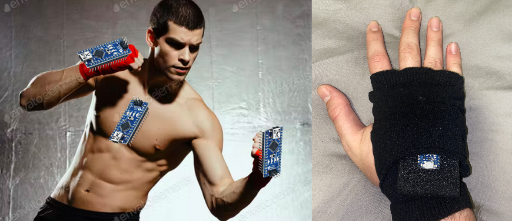

Jeager-ML
Intent
Ever wanted to control giant mechs with gloves? Good luck with that. The best we can do is tell you how to play street fighter games. This project does one thing first and foremost: The JaegerML project uses machine learning on embedded low-energy devices for the analysis and classification of gestures given real-time accelerometer and gyroscope data. The gestures that we are looking to classify for this proof of concept will be a set of punches. These punches, once classified, will map directly to key presses in an arcade fighting game inspired by StreetFighter.
Features
(6) recognized punching gestures:
- Left Hand Jab
- Left Hand Punch
- Left Hand Haymaker
- Right Hand Jab
- Right Hand Punch
- Right Hand Haymaker
Development Method
Capturing Data
Punches dataset will be gathered for the training of the model.
JaegerML Data Capture is used to get accellerometer and gyroscope sample data for machine learning model training purposes.
Everyone recorded 50 observations of 119 samples and 6 features, to be classified against 8 possible fighting movements. All of the data will be uploaded to the github and will be of a uniform format.
The data was captured via serial input through a USB, which was then saved as a CSV.
Training the model
Training the model is done using Python with Jupyter Notebook using logistic regression. We saw precision measurments of 75% with this method. We think that it was this low because many of the moves look the same.
Testing/Verifying
The two Arduinos and their batteries will be strapped to the back of the hands by Ace Bandages wrapped around the palm. Arduinos will advertise hexadecimal values over BLE corresponding to recognized punch classes. These advertised BLE characteristics will be read by a nifty little fighting game created custom for this project specifically (thanks Wyatt!).
Okay, but why TinyML?
- We don’t want a machine learning model running on the PC sucking up that precious computing power!
- Devices can be low energy and fitted into gloves/wearable devices.
- When used with Bluetooth Low Enegy it allows controllers to not have to keep serial connections open to transfer data, rather a single hex value can be advertised from the Arduino controllers, designating the punch class to a listening client.
- Given the use of BLE, this application could be extended to control mobile games, etc.
- Essentially allows an open source look into developing a “lightweight game controller” that is pretty cheap and easy to develop.
Wishlist
- 3rd Arduino Nano 33 BLE Sense on the chest to control forward/backward lateral movement and jumping
- Blocking hotkey binding via blocking hand gesture
- Special attacks (denoted by a special hand gesture before attack)